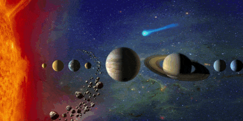
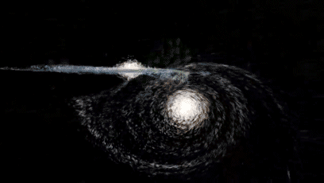

The suit has a mass of 47 pounds (21 kg) without a life support backpack, and costs only a fraction of the standard USD$12,000,000 cost for a flight-rated NASA space suit.A space suit is a garment worn to keep a human alive in the harsh environment of outer space,

The Objects in Our Solar System
1 star (The Sun)
8 planets (Mercury, Venus, Earth, Mars, Jupiter, Saturn, Uranus, and Neptune)
5 dwarf planets (Pluto, Ceres, Haumea, Makemake, and Eris)
181 moons.
566,000 asteroids.
3,100 comets

On November 4, 2013, astronomers reported, based on Kepler space mission data, that there could be as many as 40 billion Earth-sized planets orbiting in the habitable zones of Sun-like stars and red dwarf stars within the Milky Way galaxy. 11 billion of these estimated planets may be orbiting Sun-like stars.

All in all, Hubble reveals an estimated 100 billion galaxies in the universe or so, but this number is likely to increase to about 200 billion as telescope technology in space improves, Livio told Space.com